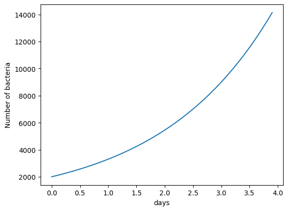
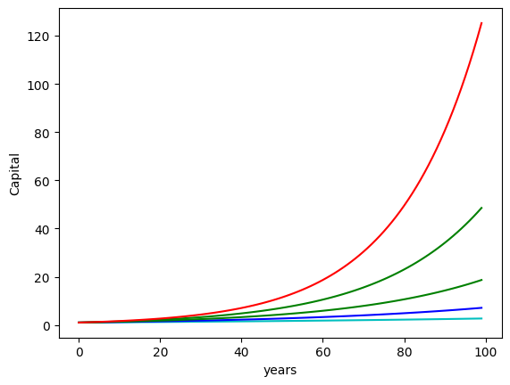
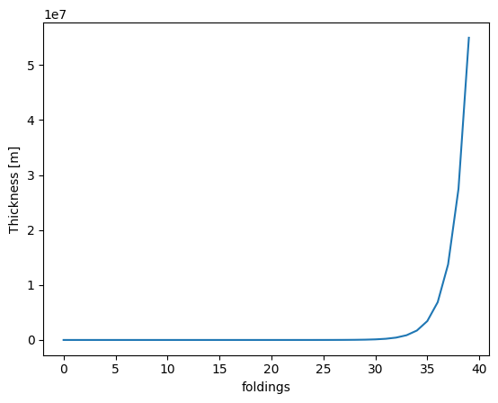
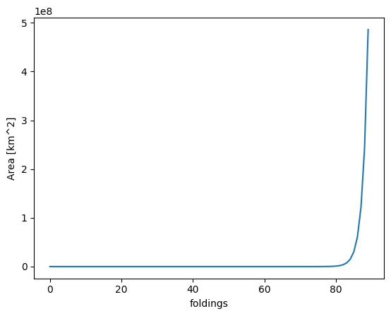

Example of exponential growth
Contents
Example of exponential growth¶
import numpy as np
import matplotlib.pyplot as plt
r = 0.651 # growth factor
t = np.arange(0., 4., 0.1)
plt.plot(t, 2000*(1+r)**t, '-')
plt.xlabel('days')
plt.ylabel('Number of bacteria')
plt.show()
print (2000*(1+r)**3)

9000.594901999999
Compound interest¶
Despite the different jargon the compound interest is nothing but an exponential (geometric) growth. The initial capital grows by an amount called interest rate. Periodically (typically every year) the incraesed capital is computed. If you choose to reinvest the increased capital, the interest rate will now be computed on this new amount. This is called a compound interest (interest on interest - exponential growth). If you choose to cash the interest and leave only the intial capital then it is called simple interest.
The finance example is a great one to show how little the human brain is used to work with expoential growths.
# Use an interest rate of 1,2,4,5%, an initial capital of 1 CHF and compunond yearly for several years
c = 1
t = np.arange(0., 100., 1)
plt.plot(t, c*(1+0.01)**t, 'c-')
plt.plot(t, c*(1+0.02)**t, 'b-')
plt.plot(t, c*(1+0.03)**t , 'g-')
plt.plot(t, c*(1+0.04)**t , 'g-')
plt.plot(t, c*(1+0.05)**t , 'r-')
plt.xlabel('years')
plt.ylabel('Capital')
plt.show()

The exponential growth can only be appreciated on long periods (is another way to read the first term of a Taylor expansion: locally an exponential can be approximated with a linear function)
Growing lengths¶
Suppose you start folding a sheet of paper that has a thickness of 0.1 mm. How long does it take to create a stack that reaches the moon ?
r = 1 # 100% growth means doubling
c = 0.0001 # 0.1 mm = 0.0001 m
t = np.arange(0., 40., 1)
plt.plot(t, c*(1+r)**t, '-')
plt.xlabel('foldings')
plt.ylabel('Thickness [m]')
plt.show()

The distance between the earth and the moon is about 380000 km. You would need only about 38 foldings to reach it. If you keep folding only 12 times more, you will reach the sun (150 millions km from the earth)
import math
print(f"Foldings to the sun = {math.log(1.5E15,2)}")
print(f"Foldings to the moon = {math.log(380.E9, 2)}")
Foldings to the sun = 50.413883924031595
Foldings to the moon = 38.46720846231721
Growing areas¶
Suppose a baterium can replicate without any resource limitations. Assume its has a round shape with a diameter of 1 micrometer. How many replications steps does it need to cover Europe (10 millions km^2)? and the entire earth (500 millions km^2)?
r = 1 # 100% growth means doubling
c = 3.141*(0.5E-9)**2 # 1 um = 1E-9 km
t = np.arange(0., 90., 1)
plt.plot(t, c*(1+r)**t, '-')
plt.xlabel('foldings')
plt.ylabel('Area [km^2]')
plt.show()

# Area of the bacterium in km ^2:
a = 3.14*(0.5E-9)**2
print(a)
# number of replicas for Europe
print(math.log(1E7 / a, 2))
# number of replicas for the earth
print(math.log(5E8/a, 2))
7.850000000000001e-19
83.39743781306716
89.04129400284188